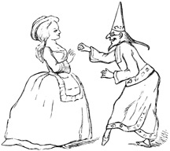

Neu fluitem dubiæ spe pendulus horæ.—Hor.
Nor let me float in fortune's power,
Dependent on the future hour.—Francis.
'Sir,—As I have passed much of life in disgust and suspense, and lost many opportunities of advantage by a passion which I have reason to believe prevalent in different degrees over a great part of mankind, I cannot but think myself well qualified to warn those who are yet uncaptivated of the dangers which they incur by placing themselves within its influence.
'In the course of even prosperity I was one day persuaded to buy a ticket in the lottery. At last the day came, my ticket appeared, and rewarded all my care and sagacity with a despicable prize of fifty pounds.
'My friends, who honestly rejoiced upon my success, were very coldly received; I hid myself a fortnight in the country that my chagrin might fume away without observation, and then, returning to my shop, began to listen after another lottery.

'With the news of a lottery I was soon gratified, and, having now found the vanity of conjecture and inefficacy of computation, I resolved to take the prize by violence, and therefore bought forty tickets, not omitting, however, to divide them between the even and the odd, that I might not miss the lucky class. Many conclusions did I form, and many experiments did I try, to determine from which of those tickets I might most reasonably expect riches. At last, being unable to satisfy myself by any modes of reasoning, I wrote the numbers upon dice, and allotted five hours every day to the amusement of throwing them in a garret; and examining the event by an exact register, found, on the evening before the lottery was drawn, that one of my numbers had turned up five times more than any of the rest in three hundred and thirty thousand throws.
'This experiment was fallacious; the first day presented the ticket a detestable blank. The rest came out with different fortune, and in conclusion I lost thirty pounds by this great adventure.
'The prize which had been suffered to slip from me filled me with anguish, and, knowing that complaint would only expose me to ridicule, I gave myself up silently to grief, and lost by degrees my appetite and my rest.'
The 'Rambler.'—Vol. III. No. 187.
Love alters not for us his hard decrees,
Not though beneath the Thracian clime we freeze,
Or the mild bliss of temperate skies forego,
And in mid-winter tread Sithonian snow:—
Love conquers all.—Dryden.
'Anningait and Ajut, a Greenland History.
'In one of the large caves to which the families of Greenland retire together to pass the cold months, and which may be termed their villages or cities, a youth and maid, who came from different parts of the country, were so much distinguished for their beauty that they were called by the rest of the inhabitants Anningait and Ajut, from their supposed resemblance to their ancestors of the same names who had been transformed of old into the sun and moon.
'The elegance of Ajut's dress, and the judicious disposition of her ornaments of coral and shells, had such an effect upon Anningait that he could no longer be restrained from a declaration of his love. He, therefore, composed a poem in her praise, in which, among other heroic and tender sentiments, he protested that, "She was beautiful as the vernal willow, and fragrant as thyme upon the mountains; that her fingers were white as the teeth of the morse, and her smile grateful as the dissolution of the ice; that he would pursue her though she should pass the snows of the midland cliffs, or seek shelter in the caves of the eastern cannibals; that he would tear her from the embrace of the genius of the rocks, snatch her from the paws of Amaroc, and rescue her from the ravine of Hafgufa."
'This ode being universally applauded, it was expected that Ajut would soon yield to such fervour and accomplishments; but Ajut, with the natural haughtiness of beauty, expected all the forms of courtship; and before she would confess herself conquered the sun returned, the ice broke, and the season of labour called all to their employments.

'It happened that a tempest drove the fish to a distant part of the coast before Anningait had completed his store; he therefore entreated Ajut that she would at last grant him her hand and accompany him to that part of the country whither he was now summoned of necessity. Ajut thought him not yet entitled to such condescension, but proposed, as a trial of constancy, that he should return at the end of summer to the cavern where their acquaintance commenced, and there expect the reward of his assiduities. But Anningait tried to soften this resolution: he feelingly represented the uncertainty of existence and the dangers of the passage, and his loneliness when distant from the object of his love. "Consider, Ajut," urged he, "a few summer days, a few winter nights, and the life of man is at an end. Night is the time of ease and festivity, of revels and gaiety; but what will be the flaming lamp, the delicious seal, or the soft oil without the smile of Ajut?"
'The eloquence of Anningait was vain; the maid continued inexorable, and they parted with ardent promises to meet again before the night of winter. Anningait, however discomposed by the dilatory coyness of Ajut, was resolved to omit no tokens of amorous respect, and therefore presented her at his departure with the skins of seven white fawns, of five swans, and eleven seals, with three marble lamps, ten vessels of seal-oil, and a large kettle of brass which he had purchased from a ship at the price of half a whale and two horns of sea-unicorns.
'Ajut was so much affected by the fondness of her lover, or so much overpowered by his munificence, that she followed him to the seaside; and, when she saw him enter the boat, wished aloud that he might return with plenty of skins and oil, that neither the mermaids might snatch him into the deeps, nor the spirits of the rocks confine him in their caverns.
'Parted from each other, the lovers devoted themselves to the remembrances of their affection; Anningait devoted himself to fishing and the chase with redoubled energy, that his stores for the future might exceed the expectations of his bride; and Ajut mourned the absence of her betrothed with ceaseless fidelity. She neglected the ornaments of her person, and, to avoid the solicitations of her lover's rivals, withdrew herself into complete seclusion. Thus passed the months of separation. At last Ajut saw the great boat in which Anningait departed stealing slow and heavy laden along the coast. She ran with all the impatience of affection to catch her lover in her arms, and relate her constancy and sufferings. When the company reached the land they informed her that Anningait, after the fishery was ended, being unable to support the slow passage of the vessel of carriage, had set out before them in his fishing-boat, and they expected at their arrival to have found him on shore.
'Ajut, distracted at this intelligence, was about to fly into the hills without knowing why, though she was now in the hands of her parents, who forced her back to her own hut and endeavoured to comfort her; but when at last they retired to rest, Ajut went down to the beach, where, finding a fishing-boat, she entered it without hesitation, and, telling those who wondered at her rashness that she was going in search of Anningait, rowed away with great swiftness and was seen no more.

'The fate of these lovers gave occasion to various fictions and conjectures. Some are of opinion that they were changed into stars; others imagine that Anningait was seized in his passage by the genius of the rocks, and that Ajut was transformed into a mermaid, and still continues to seek her lover in the deserts of the sea. But the general persuasion is that they are both in that part of the land of souls where the sun never sets, where oil is always fresh, and provisions always warm. The virgins sometimes throw a thimble and a needle into the bay from which the hapless maid departed, and when a Greenlander would praise any couple for virtuous affection he declares that they love like Anningait and Ajut.'
The 'Rambler.'—Vol. III. No. 191.
Cereus in vitium flecti, monitoribus asper.—Hor.
The youth——
Yielding like wax, th' impressive folly bears;
Rough to reproof, and slow to future cares.—Francis.
'Dear Mr. Rambler,—I have been four days confined to my chamber by a cold, which has already kept me from three plays, nine sales, five shows, and six card-tables, and put me seventeen visits behind; and the doctor tells my mamma that, if I fret and cry, it will settle in my head, and I shall not be fit to be seen these six weeks. But, dear Mr. Rambler, how can I help it? At this very time Melissa is dancing with the prettiest gentleman; she will breakfast with him to-morrow, and then run to two auctions, and hear compliments, and have presents; then she will be dressed and visit, and get a ticket to the play, then go to cards, and win, and come home with two flambeaus before her chair. Dear Mr. Rambler, who can bear it?
'I am at a loss to guess for what purpose they relate such tragic stories of the cruelty, perfidy, and artifices of men, who, if they ever were so malicious and destructive, have certainly now reformed their manners. I have not, since my entrance into the world, found one who does not profess himself devoted to my service, and ready to live or die as I shall command him. They are so far from intending to hurt me that their only contention is, who shall be allowed most closely to attend and most frequently to treat me; when different places of entertainment or schemes of pleasure are mentioned, I can see the eyes sparkle and the cheeks glow of him whose proposals obtain my approbation; he then leads me off in triumph, adores my condescension, and congratulates himself that he has lived to the hour of felicity. Are these, Mr. Rambler, creatures to be feared? and is it likely that any injury will be done me by those who can enjoy life only while I favour them with my presence?
'As little reason can I yet find to suspect them of stratagems and fraud. When I play at cards they never take advantage of any mistakes, nor exact from me a rigorous observation of the game. Even Mr. Shuffle, a grave gentleman, who has daughters older than myself, plays with me so negligently that I am sometimes inclined to believe he loses his money by design; and yet he is so fond of play that he says he will one day take me to his house in the country, that we may try by ourselves who can conquer. I have not yet promised him; but when the town grows a little empty I shall think upon it, for I want some trinkets, like Letitia's, to my watch. I do not doubt my luck, but I must study some means of amusing my relations.
'For all these distinctions I find myself indebted to that beauty which I was never suffered to hear praised, and of which, therefore, I did not before know the full value. This concealment was certainly an intentional fraud, for my aunts have eyes like other people, and I am every day told that nothing but blindness can escape the influence of my charms. Their whole account of that world which they pretend to know so well has been only one fiction entangled with another; and though the modes of life oblige me to continue some appearances of respect, I cannot think that they who have been so clearly detected in ignorance or imposture have any right to the esteem, veneration, or obedience of,
'Sir, yours,
'Bellaria.'
The 'Rambler.'—Vol. III. No. 199.
Obscure, unprized, and dark the magnet lies,
Nor lures the search of avaricious eyes,
Nor binds the neck, nor sparkles in the hair,
Nor dignifies the great, nor decks the fair.
But search the wonders of the dusky stone,
And own all glories of the mine outdone,
Each grace of form, each ornament of state,
That decks the fair or dignifies the great!
'To the "Rambler."
'Sir,—The curiosity of the present race of philosophers having been long exercised upon electricity has been lately transferred to magnetism; the qualities of the loadstone have been investigated, if not with much advantage, yet with great applause; and, as the highest praise of art is to imitate nature, I hope no man will think the makers of artificial magnets celebrated or reverenced above their deserts.

'I have for some time employed myself in the same practice, but with deeper knowledge and more extensive views. While my contemporaries were touching needles and raising weights, or busying themselves with inclination and variation, I have been examining those qualities of magnetism which may be applied to the accommodation and happiness of common life. I have left to inferior understandings the care of conducting the sailor through the hazards of the ocean, and reserved to myself the more difficult and illustrious province of preserving the connubial compact from violation, and setting mankind free for ever from the torments of fruitless vigilance and anxious suspicion.
'To defraud any man of his due praise is unworthy of a philosopher. I shall therefore openly confess that I owe the first hint of this inestimable secret to the Rabbi Abraham Ben Hannase, who, in his treatise of precious stones, has left this account of the magnet: "The calamita, or loadstone, that attracts iron, produces many bad fantasies in man. Women fly from this stone. If, therefore, any husband be disturbed with jealousy, and fear lest his wife converses with other men, let him lay this stone upon her while she is asleep. If she be pure she will, when she wakes, clasp her husband fondly in her arms; but if she be guilty she will fall out of bed, and run away."
'With these hopes I shall, in a short time, offer for sale magnets armed with a particular metallic composition, which concentrates their virtue and determines their agency.

'I shall sell them of different sizes, and various degrees of strength. I have some of a bulk proper to be hung at the bed's head, as scarecrows, and some so small that they may be easily concealed. Some I have ground into oval forms, to be hung at watches; and some, for the curious, I have set in wedding rings, that ladies may never want an attestation of their innocence. Some I can produce so sluggish and inert that they will not act before the third failure, and others so vigorous and animated that they exert their influence against unlawful wishes, if they have been willingly and deliberately indulged. As it is my practice honestly to tell my customers the properties of my magnets I can judge by the choice of the delicacy of their sentiments. Many have been contented to spare cost by purchasing only the lowest degree of efficacy, and all have started with terror from those which operate upon the thoughts. One young lady only fitted on a ring of the strongest energy, and declared that she scorned to separate her wishes from her acts, or allow herself to think what she was forbidden to practise.
'I am, &c., 'Hermeticus.'
CHAPTER XVII.
THACKERAY'S FAMILIARITY WITH THE WRITINGS OF THE SATIRICAL ESSAYISTS—Continued.
Characteristic Passages from the Works of the 'Early Humourists,' from Thackeray's Library, illustrated by the Author's hand with original Marginal Sketches suggested by the Text—The 'Mirror,' Edinburgh, 1779-80—Introduction—The Society in which the 'Mirror' and 'Lounger' originated—Notice of Contributors—Paragraphs and Pencillings.
Preface to the 'Mirror.'
The circumstances which led to the publication of the 'Mirror,' by a certain society of friends in Edinburgh, are set forth in the concluding paper of that work, No. 110, which originally appeared May 27, 1780. The dying speech of the Scotch essayist forms a suitable introduction to the series.
Extremum concede laborem.—Virg. Ecl. x. 1.
'As, at the close of life, people confess the secrets and explain the mysteries of their conduct, endeavour to do justice to those with whom they have had dealings, and to die in peace with all the world; so in the concluding number of a periodical publication, it is usual to lay aside the assumed name, or fictitious character, to ascribe the different papers to their true authors, and to wind up the whole with a modest appeal to the candour or indulgence of the public.
'In the course of these papers the author has not often ventured to introduce himself, or to give an account of his own situation; in this, therefore, which is to be the last, he has not much to unravel on that score. From the narrowness of the place of its appearance, the 'Mirror' did not admit of much personification of its editor; the little disguise he has used has been rather to conceal what he was than to give himself out for what he was not.

'The idea of publishing a periodical paper in Edinburgh took its rise in a company of gentlemen whom particular circumstances of connection brought frequently together. Their discourse often turned upon subjects of manners, of taste, and of literature. By one of these accidental resolutions, of which the origin cannot easily be traced, it was determined to put their thoughts into writing, and to read them for the entertainment of each other. Their essays assumed the form, and soon after some one gave them the name, of a periodical publication; the writers of it were naturally associated, and their meetings increased the importance as well as the number of their productions. Cultivating letters in the midst of business, composition was to them an amusement only; that amusement was heightened by the audience which this society afforded; the idea of publication suggested itself as productive of still higher entertainment.
'It was not, however, without diffidence that such a resolution was taken. From that and several other circumstances it was thought proper to observe the strictest secrecy with regard to the authors; a purpose in which they have been so successful that, at this very moment, the very publisher of the work knows only one of their number, to whom the conduct of it was entrusted.'
The members of the society alluded to in the last number of the 'Mirror' afterwards carried on the 'Lounger.' They were Mr. R. Cullen, Mr. M'Leod Bannatyne, Mr. George Ogilvy, Mr. Alex. Abercromby, and Mr. W. Craig, advocates, the last two of whom were afterwards appointed Judges of the Court of Session in Scotland; Mr. George Home, one of the principal clerks of that court; and Mr. H. Mackenzie, of the Exchequer of Edinburgh.
Of these Mr. Ogilvy, though with abilities and genius abundantly capable of the task, never contributed to the 'Mirror,' and the society had to lament his death before the appearance of the 'Lounger.' None of its members, Mr. Mackenzie excepted, whose name is sufficiently known as an author, had ever before been concerned in any publication. To Mr. Mackenzie, therefore, was entrusted the conducting the work, and he alone had any communication with the editor, to whom the other members of the society were altogether unknown. Secrecy was an object of much importance to a work of this sort; and during the publication of both these performances it was singularly well attained.
Mr. Mackenzie's papers were the most numerous. He is stated to have been the author of Nos. 2, 5, 7, 11, 12, 14, 16 (the latter part of 17), 21, 23, 25, 30, 32, 34 (part of 35), 38, 40, 41, 42, 43, 44, 49, 53, 54 (part of 56), 61, 64, 72, 78, 80, 81, 84, the poem in 85 (part of 89), 91, 92, 93 (part of 96), 99, 100, 101 (parts of 102, 103), 105, 107, 108, 109, and 110.
The contributions of correspondents were of considerable assistance to the success of the 'Mirror.' Of these Lord Hailes was the most industrious; among other promoters we find the names of Mr. Richardson, Professor of Humanity at Glasgow; Mr. Fraser Tytler, Advocate and Professor of History in the University of Edinburgh; Mr. D. Hume, Professor of Scots Laws at Edinburgh, nephew of the celebrated David Hume; D. Beattie; Cosmo Gordon, Esq., one of the Barons of Exchequer in Scotland; Mr. W. Strahan, of London, the King's printer; Mr. Baron Gordon, &c.
THE 'MIRROR.'
A Periodical Paper Published at Edinburgh in the Years 1779 and 1780.
Veluti in speculo.
'No child ever heard from its nurse the story of "Jack the Giant Killer's Cap of Darkness" without envying the pleasures of invisibility.
'This power is, in some degree, possessed by the writer of an anonymous paper. He can at least exercise it for a purpose for which people would be most apt to use the privilege of being invisible: to wit, that of hearing what is said of himself.
'A few hours after the publication of my first number, I sallied forth, with all the advantages of invisibility, to hear an account of myself and my paper.
'A smart-looking young man, in green, said he was sure it would be very satirical; his companion, in scarlet, was equally certain that it would be very stupid. But with this last prediction I was not much offended, when I discovered that its author had not read the first number, but only inquired of Mr. Creech where it was published.
'A plump round figure, near the fire, who had just put on his spectacles to examine the paper, closed the debate by observing, with a grave aspect, that, as the author was anonymous, it was proper to be very cautious in talking of the performance. After glancing over the pages, he said he could have wished they had set apart a corner for intelligence from America; but, having taken off his spectacles, wiped, and put them into their case, he said, with a tone of discovery, he had found out the reason why there was nothing of that sort in the "Mirror"—it was in order to save the tax upon newspapers.'
The 'Mirror.'—Vol. I. No. 4.
Meliora pii docuere parentes.
The following is an extract from a letter, addressed by a parent to the editor, on the evil consequences of sending youths to Paris to finish their education:—
'When the day of their return came, my girl, who had been constantly on the look-out, ran to tell me she saw a postchaise driving to the gate. But, judge of my astonishment when I saw two pale, emaciated figures get out of the carriage, in their dress and looks resembling monkeys rather than human creatures. What was still worse, their manners were more displeasing than their appearance. When my daughter ran up, with tears of joy in her eyes, to embrace her brother, he held her from him, and burst into an immoderate fit of laughter at something in her dress that appeared to him ridiculous. He was joined in the laugh by his younger brother, who was pleased, however, to say that the girl was not ill-looking, and, when taught to put on her clothes, and to use a little rouge, would be tolerable.

'Mortified as I was at this impertinence, the partiality of a parent led me to impute it, in a great measure, to the levity of youth; and I still flattered myself that matters were not so bad as they appeared to be. In these hopes I sat down to dinner. But there the behaviour of the young gentlemen did not, by any means, tend to lessen my chagrin. There was nothing at table they could eat; they ran out in praise of French cookery, and seemed even to be adepts in the science; they knew the component ingredients of most fashionable ragoûts and fricandeaus, and were acquainted with the names and characters of the most celebrated practitioners of the art in Paris.
'In short, it was found these unfortunate youths had returned ignorant of everything they ought to know, their minds corrupted, their bodies debilitated, and their vanity and conceit making them incapable of listening to reason or advice.'
The 'Mirror.'—Vol. I. No. 10.
Mr. Fleetwood, a man of excessive refinement and delicacy of taste, is described as paying visits to his friends in the country. But the pleasures which might possibly be derived from this exercise are marred by his false sensibility.
'Our next visit was to a gentleman of liberal education and elegant manners, who, in the earlier part of his life, had been much in the polite world. Here Mr. Fleetwood expected to find pleasure and enjoyment sufficient to atone for his two previous experiences which were far from agreeable; but here, too, he was disappointed.
'Mr. Selby, for that was our friend's name, had been several years married. His family increasing, he had retired to the country, and, renouncing the bustle of the world, had given himself up to domestic enjoyments; his time and attention were devoted chiefly to the care of his children. The pleasure which he himself felt in humouring all their little fancies made him forget how troublesome that indulgence might be to others.

'The first morning we were at his house, when Mr. Fleetwood came into the parlour to breakfast, all the places at table were occupied by the children; it was necessary that one of them should be displaced to make room for him; and, in the disturbance which this occasioned, a teacup was overturned, and scalded the finger of Mr. Selby's eldest daughter, a child about seven years old, whose whimpering and complaining attracted the whole attention during breakfast. That being over, the eldest boy came forward with a book in his hand, and Mr. Selby asked Mr. Fleetwood to hear him read his lesson. Mrs. Selby joined in the request, though both looked as if they were rather conferring a favour on their guest. The eldest had no sooner finished, than the youngest boy presented himself; upon which his father observed that it would be doing injustice to Will not to hear him as well as his elder brother Jack, and in this way was my friend obliged to spend the morning in performing the office of a schoolmaster to the children in succession.
'Mr. Fleetwood liked a game at whist, and promised himself a party in the evening, free from interruption. Cards were accordingly proposed, but Mrs. Selby observed that her little daughter, who still complained of her scalded finger, needed amusement as much as any of the company. In place of cards, Miss Harriet insisted on the "game of the goose." Down to it we sat, and to a stranger it would have been not unamusing to see Mr. Fleetwood, with his sorrowful countenance, at the "royal and pleasant game of the goose," with a child of seven years old. It is unnecessary to dwell longer on particulars. During all the time we were at Mr. Selby's the delighted parents were indulging their fondness, while Mr. Fleetwood was repining and fretting in secret.'
The 'Mirror.'—Vol. I. No. 117.
Inanit veteres statuas Damasippus emendo.—Hor.
A wife is writing to the 'Mirror' upon a new affliction which has attacked her husband. He happened to receive a crooked shilling in exchange for some of his goods (the husband was a grocer), and a virtuoso informed him that it was a coin of Alexander III., of great rarity and value, whereupon the good man became seized with a passion for collecting curiosities.
'His taste,' says the wife's letter, 'ranges from heaven above to the earth beneath, and to the waters under the earth. Every production of nature or of art, remarkable either for beauty or deformity, but particularly if either scarce or old, is now the object of my husband's avidity. The profits of our business, once considerable, but now daily diminishing, are expended, not only on coins, but on shells, lumps of different coloured stones, dried butterflies, old pictures, ragged books, and worm-eaten parchments.
'Our house, which it was once my highest pleasure to keep in order, it would be now equally vain to attempt cleaning as the ark of Noah. The children's bed is supplied by an Indian canoe; and the poor little creatures sleep three of them in a hammock, slung up to the roof between a stuffed crocodile and the skeleton of a calf with two heads. Even the commodities of our shop have been turned out to make room for trash and vermin. Kites, owls, and bats are perched upon the top of our shelves; and it was but yesterday that, putting my hand into a glass jar that used to contain pickles, I laid hold of a large tarantula in place of a mangoe.
'In the bitterness of my soul, Mr. Mirror, I have been often tempted to revenge myself on the objects of my husband's phrenzy, by burning, smashing, and destroying them without mercy; but, besides that such violent procedure might have effects too dreadful upon a brain which, I fear, is already much unsettled, I could not take such a course without being guilty of a fraud to our creditors, several of whom will, I believe, sooner or later, find it their only means of reimbursement to take back each man his own monsters.'
The 'Mirror.'—Vol. I. No. 25.
The 'Mirror' prints a letter upon the grievances felt by the families of men of small fortunes when associated with those enjoying great ones.
'You will remember, sir, my account of a visit which my daughters paid to a great lady in our neighbourhood, and of the effects which that visit had upon them. I was beginning to hope that time, and the sobriety of manners which home exhibited, would restore them to their former situation, when, unfortunately, a circumstance happened still more fatal to me than their expedition to ——. This, sir, was the honour of a visit from the great lady in return.

'I was just returning from the superintendence of my ploughs, in a field I have lately enclosed, when I was met, on the green before my door, by a gentleman (for such I took him to be) mounted upon a very handsome gelding, who asked me, by the appellation of honest friend, if this was not Mr. Homespun's; and, in the same breath, whether the ladies were at home. I told him my name was Homespun, the house was mine, and my wife and daughters were, I believed, within. Upon this, the young man, pulling off his hat, and begging my pardon for calling me honest, said he was despatched by Lady ——, with her compliments, to Mrs. and Misses Homespun, and that, if convenient, she intended herself the honour of dining with them, on her return from B—— Park (the seat of another great and rich lady in our neighbourhood).
'I confess, Mr. Mirror, I was struck somewhat of a heap with the message; and it would not, in all probability, have received an immediate answer, had it not been overheard by my eldest daughter, who had come to the window on the appearance of a stranger.
'"Mr. Papillot," said she, immediately, "I rejoice to see you; I hope your lady and all the family are well." "Very much at your service, ma'am," he replied, with a low bow; "my lady sent me before, with the offer of her best compliments, and that, if convenient"—and so forth, repeating his words to me. "She does us infinite honour," said my young madam; "let her ladyship know how happy her visit will make us; but, in the meantime, Mr. Papillot, give your horse to one of the servants, and come in and have a glass of something after your ride." "I am afraid," answered he (pulling out his right-hand watch, for, would you believe it, sir, the fellow had one in each fob), "I shall hardly have time to meet my lady at the place she appointed me." On a second invitation, however, he dismounted, and went into the house, leaving his horse to the care of the servants; but the servants, as my daughter very well knew, were all in the fields at work; so I, who have a liking for a good horse, and cannot bear to see him neglected, had the honour of putting Mr. Papillot's horse in the stable myself.'
The arrival of the distinguished party completely upset Mr. Homespun's establishment, turned the heads of his entire family, and annihilated the effect of all his good teachings.
The 'Mirror.'—Vol. I. No. 50.
'It was formerly one of those national boasts which are always allowable, and sometimes useful, that the ladies of Scotland possessed a purity of conduct and delicacy of manners beyond that of most other countries. Free from the bad effects of overgrown fortunes, and from the dissipated society of an overgrown capital, their beauty was natural and their minds were uncorrupted.
'Formerly a London journey was attended with some difficulty and danger, and posting thither was an achievement as masculine as a fox-chase. Now the goodness of the roads and the convenience of the vehicles render it a matter of only a few days' moderate exercise for a lady; Facilis descensus Averni; our wives and daughters are carried thither to see the world, and we are not to wonder if some of them bring back only that knowledge of it which the most ignorant can acquire and the most forgetful retain. That knowledge is communicated to a certain circle on their return; the imitation is as rapid as it is easy; they emulate the English, who before have copied the French; the dress, the phrase, and the morale of Paris is transplanted first to London, and thence to Edinburgh; and even the sequestered regions of the country are sometimes visited in this northern progress of politeness.
'It will be said, perhaps, that there is often a levity of behaviour without any criminality of conduct; that the lady who talks always loud, and sometimes free, goes much abroad, or keeps a crowd of company at home, rattles in a public place with a circle of young fellows, or flirts in a corner with a single one, does all this without the smallest bad intention, merely as she puts on a cap and sticks it with feathers because she has seen it done by others whose rank and fashion entitle them to her imitation.'
The 'Mirror.'—Vol. II. No. 44.
Sit mihi fas audita loqui.
'Passing the Exchange a few days ago, I perceived a little before me a short, plump-looking man, seeming to set his watch by St. Giles's clock, which had just then struck two. On observing him more closely, I recognised Mr. Blubber, with whom I had been acquainted at the house of our mutual friend Mr. Bearskin.
'He recollected me, and, shaking me cordially by the hand, told me he was just returned safe from his journey to the Highlands, and had been regulating his watch by our town clock, as he found the sun did not go exactly in the Highlands as it did in the Low country. He added, that if I would come and eat a Welsh rare-bit and drink a glass of punch with him and his family that evening, at their lodgings hard by, they would give me an account of their expedition.
'When I went to their lodgings in the evening, I could not help making one preliminary observation, that it was much too early in the season for visiting the country to advantage; but to this Mr. Blubber had a very satisfactory answer: they were resolved to complete their tour before the new tax upon post-horses should be put in execution.
'The first place they visited after they left Edinburgh was Carron, which Mr. Blubber seemed to prefer to any place he had seen; but the ladies did not appear to have relished it much. The mother said, "She was like to have fell into a fit at the noise of the great bellows." Miss Blubber agreed that it was monstrous frightful indeed. Miss Betsy had spoiled her petticoat in getting in, and said it was a nasty place, not fit for genteel people, in her opinion. Blubber put on his wisest face, and observed that women did not know the use of them things. There was much the same difference in their sentiments with regard to the Great Canal. Mr. Blubber took out a piece of paper, on which he had marked down the lockage duty received in a week there; he shook his head, however, and said he was sorry to find the shares below par.
'Taymouth seemed to strike the whole family. The number and beauty of the temples were taken particular notice of; nor was the trimness of the walks and hedges without commendation. Miss Betsy Blubber declared herself charmed with the shady walk by the side of the Tay, and remarked what an excellent fancy it was to shut out the view of the river, so that you might hear the stream without seeing it. Mr. Blubber, however, objected to the vicinity of the hills, and Mrs. Blubber to that of the lake, which she was sure must be extremely unwholesome.
'But, however various were the remarks of the family on the particulars of their journey in detail, I found they had perfectly settled their respective opinions of travelling in general. The ladies had formed their conclusion that it was monstrous pleasant, and the gentleman his that it was monstrous dear.'
The 'Mirror.'—Vol. II. No. 50.
A correspondent is addressing the 'Mirror' on the ill effects of listlessness, indolence, and an aversion to profitable exertion. The writer describes his visit to a barrister without practice, who, having been left a small competence, had relinquished his profession to engage in literary pursuits.
Mr. Mordant, the literary recluse, on his friend's arrival, was discovered cultivating his kitchen garden. The visitor is conducted through the grounds, which had been laid out in accordance with the owner's taste.
'Near a village, on our way homewards, we met a set of countrymen engaged at cricket, and soon after a marriage company dancing the bride's dance upon the green. My friend, with a degree of gaiety and alacrity which I had never before seen him display, not only engaged himself, but compelled me likewise to engage in the exercise of the one and the merriment of the other. In a field before his door an old horse, blind at one eye, came up to us at his call, and ate the remainder of the grains from his hand from which he had previously fed a flock of tame pigeons.
'Our conversation for that evening, relating chiefly to the situation of our common friends, memory of former scenes, and other subjects as friends naturally converse about after a long absence, afforded me little opportunity of gratifying my curiosity. Next morning I arose at my wonted early hour, and stepping into his study found it unoccupied. Upon examining a heap of books and papers that lay confusedly mingled on the table and the floor, I was surprised to find that by much the greater part of them, instead of metaphysics and morals (the branches connected with his scheme of writing), treated of Belles Lettres, or were calculated merely for amusement. There was, besides, a journal of his occupations for several weeks, from which, as it affords a picture of his situation, I transcribe a part:—
'"Thursday, eleven at night.—Went to bed: ordered my servant to wake me at six, resolving to be busy all next day.
'"Friday morning.—Waked a quarter before six; fell asleep again, and did not wake till eight.
'"Till nine read the first act of Voltaire's 'Mahomet,' as it was too late to begin serious business.

'"Ten.—Having swallowed a short breakfast, went out for a moment in my slippers. The wind having left the east, am engaged by the beauty of the day to continue my walk. Find a situation by the river where the sound of my flute produced a very singular and beautiful echo—make a stanza and a half by way of an address to it—visit the shepherd lying ill of a low fever, find him somewhat better (mem.—to send him some wine)—meet the parson, and cannot avoid asking him to dinner—returning home find my reapers at work—superintend them in the absence of John, whom I send to inform the house of the parson's visit—read, in the meantime, part of Thomson's 'Seasons,' which I had with me—from one to six plagued with the parson's news and stories—take up 'Mahomet' to put me in good humour; finish it, the time allotted for serious study being elapsed—at eight, applied to for advice by a poor countryman, who had been oppressed; cannot say as to the law; give him some money—walk out at sunset to consider the causes of the pleasure arising from it—at nine, sup, and sit till eleven hearing my nephew read, and conversing with my mother, who was remarkably well and cheerful—go to bed.
'"Saturday. Some company arrived—to be filled up to-morrow"—(for that and the two succeeding days there was no further entry in the journal).
'"Tuesday.—Waked at seven; but, the weather being rainy and threatening to confine me all day, lay till nine—ten, breakfasted and read the newspapers; very dull and drowsy—eleven, day clears up, and I resolve on a short ride to clear my head."
'A few days' residence with him showed me that his life was in reality, as is here represented, a medley of feeble exertions, indolent pleasures, secret benevolence, and broken resolutions. Nor did he pretend to conceal from me that his activity was not now so constant as it had been; but he insisted that he still could, when he thought proper, apply with his former vigour, and flattered himself that these frequent deviations from his plan of employment, which in reality were the fruit of indolence and weakness, arose from reason and conviction.
'"After all," said he to me one day, when I was endeavouring to undeceive him, "after all, granting what you allege, if I be happy, and really am so, what more could activity, fame, or preferment bestow upon me?"
'After a stay of some weeks I departed, convinced that his malady was past a cure, and lamenting that so much real excellence and ability should be thus in a great measure lost to the world, as well as to their possessor, by the attendance of a single fault.'
The 'Mirror.'—Vol. II. No. 56.
The following letter is from a dweller in the country, an ardent lover of retirement, who is enchanted with the simplicity of life and incident to be encountered in a pastoral retreat:—
'My dear Sir,—The moment I found myself disengaged from business, you know I left the smoke and din of your blessed city, and hurried away to pure skies and quiet at my cottage.